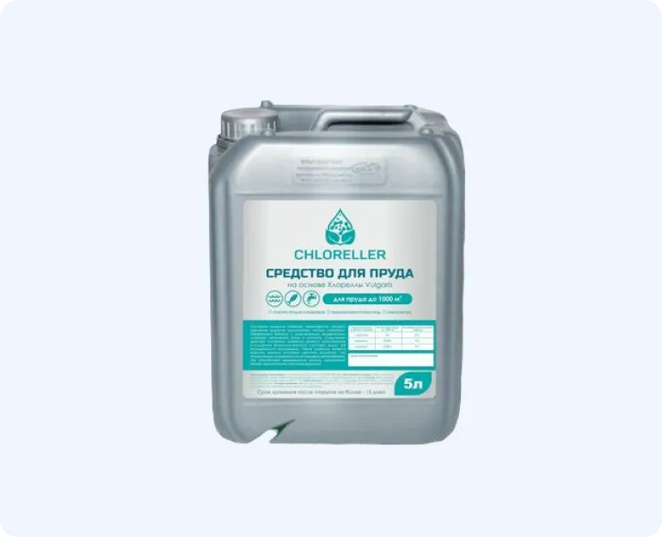

Биопрепараты
На основе хлореллы VULGARIS, от 5 до 20л, жидкость
Цена и наличие
- 5 л70,3 BYN / шт.В наличии
- 10 л129,5 BYN / шт.В наличии
- 20 л228,51 BYN / шт.В наличии
Данные на 23.11.2026.
Характеристики
- Объем
- 5-20 л
- Назначение
- для очистки и алголизации прудов
- Особенности
- на основе хлореллы VULGARIS
- Размер емкости
- 5 л
- Для прудов макс. объемом воды
- до 1000 м² (5 л) до 2000 м² (10 л) до 4000 м² (20 л)
- Что делает
- для очистки и алголизации прудов
Описание
Хлорелла для прудов и водоемов “CHLORELLER” ДЛЯ ОЧИСТКИ и алголизации ПРУДов НА ОСНОВЕ ХЛОРЕЛЛЫ VULGARIS
Хлорелла для прудов и водоемов “CHLORELLER” ДЛЯ ОЧИСТКИ и алголизации ПРУДов НА ОСНОВЕ ХЛОРЕЛЛЫ VULGARIS Средство “CHLORELLER” – это суспензия микроводоросли хлорелла для комплексной очистки и биологической реабилитации пресных водоемов, прудов. Недорого и просто! Достаточно вылить суспензию из канистры в водоем. Работает быстро! Эффект «цветения» воды заметно уменьшается уже через 1-2 недели после внесения. Абсолютно безопасно! Никаких токсичных компонентов, только живые клетки хлореллы и вода. Метод не наносит никакого вреда водоему и его обитателям, только польза. Гарантия результата! Перед применением необходимо проконсультироваться со специалистом.
Действие средства и для кого подходит
Действие хлореллы в водоеме: 1 – Эффективно борется с цветением синезеленых водорослей. 2 – Улучшает кормовую базу для рыб, являясь пищей для зоопланктона. 3 – Повышает прозрачность воды, насыщает ее кислородом, устраняет неприятный запах. 4 – Снижает уровень органических и неорганических загрязнений. Для кого подходит: для рыбных хозяйств (садковые, прудовые, пастбищные); для платных рыбалок; для баз отдыха (санаториев); для муниципальных водоемов; для очистки сточных вод; для физических лиц (декоративные водоемы).
Дополнительно
Хлорелла живёт в поверхностном слое воды на глубине до 1,5 метров. Она потребляет углекислый газ и выделяет молекулярный кислород. Суспензия не оседает на дно, благодаря чему происходит процесс фотосинтеза и активного размножения микроводоросли: каждые 12 часов ее количество увеличивается в 2-4 раза. Поэтому очистка водоёма происходит быстро и требуется совсем немного суспензии, чтобы запустить процесс. За несколько дней хлорелла становится доминирующей микроводорослью в поверхностном слое воды, насыщая его кислородом и удаляя из него излишки углекислого газа, различные органические и неорганические загрязнения. Хлорелла предотвращает процесс гниения органических соединений. В результате, снижая количество патогенной микрофлоры. Хлорелла и выделяемые в процессе жизнедеятельности вещества являются отличным кормом для рачков, дафний и других полезных микроорганизмов, являющихся кормом для рыб. За 10 дней размножения хлореллы, численность зоопланктона в водоеме увеличивается в разы. Больше корма — больше рыбы. Численность хлореллы в какой-то момент начинает регулироваться естественным путем: цветение водоема при переизбытке микроводоросли хлорелла в принципе невозможно. Хлорелла эффективно подавляет сине-зелёные водоросли. В процессе альголизации происходит разностороннее восстановление экосистемы водоема, вплоть до его полной реабилитации: если у вас зацвёл водоём, то уже через 3 дня в нём активируется клёв, а через 2 недели очистится поверхность воды пруда.